Part environment overview
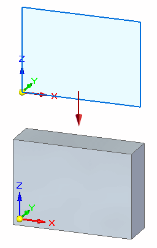
In the next few steps, sketch a rectangle and then construct the base feature of the model as shown above. Draw the sketch on the XZ principal plane, indicated by the base coordinate system.
On the File menu, click New→ISO Metric Part.
The templates listed on the New page are the industry standard that is set during Solid Edge installation. This tutorial uses the ISO Metric standard.
To create a part based on a different industry standard:
-
Click the Edit List... option at the top of the New page.
-
Select the standard you want to use from the Standard Templates list and click OK.
On the Ordered as Default dialog box, click Continue with Ordered.
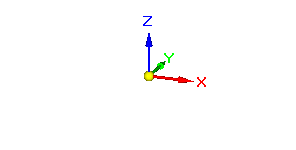
The first step in drawing any new part is drawing the sketch for the base feature. The first sketch defines the basic part shape.
First draw a sketch on one of the principal planes on the base coordinate system, and then extrude the sketch into a solid.
What is the base coordinate system?
The base coordinate system is located at the origin of the model file, as shown above. It defines the principal X, Y, and Z directions. It also defines the XZ, XY, and YZ planes. These can be used in drawing any sketch-based feature.
Depending on the computer configuration, there may also be a view orientation triad displayed in the graphics window. If so, the base coordinate system (1) is the selectable element shown highlighted in the illustration below. The view orientation triad (2), which cannot be selected, is for view orientation purposes only.
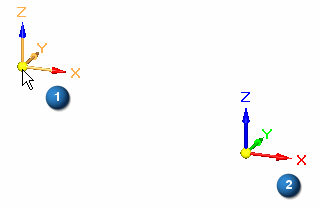
Quick View Cube
A cube (called Quick View Cube) is also displayed in the new part file. Use the Quick View Cube tool to rotate a view to any principal or isometric orientation of the model geometry. Hover over the cube to display options and view orientation controls.
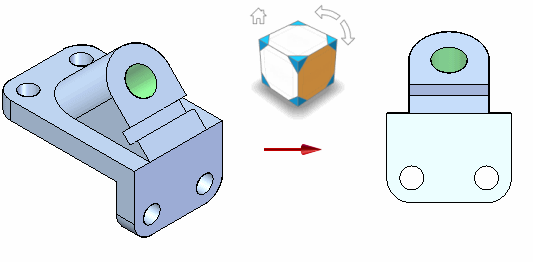
For the remainder of this tutorial, the cube and the view orientation triad are not shown in illustrations.
-
Choose the Home tab→Solids group→Extrude command
 .
.
Notice the following:
The Extrude command bar is displayed.
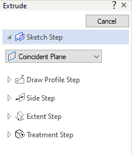
The PromptBar is displayed directly below the command ribbon near the top of the application window.
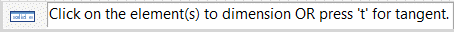
The Extrude command, like all the feature-creation commands in Solid Edge, uses a command bar to guide you through the feature construction steps without limiting you to a strict linear workflow. You can move back and forth among the steps as you work.
PromptBar displays instructions for completing the current task. The reference plane option that is displayed in command bar may be different than the illustration. In the next step, you will set the proper option.
On the Extrude command bar, in the Create-From Options list, click the Coincident Plane option.
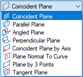
Move the cursor to the edge of the reference plane as shown. Click when the Front (XZ) plane highlights.
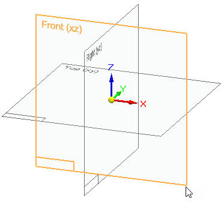
How do I use the profile plane?
You draw profiles on the profile plane. When you select a profile plane, Solid Edge reorients the profile plane parallel to the screen so you can draw the profile easily. At the same time, the menus change. Buttons for constructing features are hidden, and buttons for drawing and modifying 2D wireframe elements appear instead.
When you finish drawing the profile in the sketch view, Solid Edge shows you the profile in the starting view orientation, and changes the menus and toolbars back to the 3D commands.
On the command ribbon at the top of the Solid Edge application, choose the Home tab→Draw group→Rectangle by 2 Points .
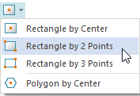
Position the cursor at the origin of the base coordinate system.
When the endpoint symbol appears, click to define the start point of the rectangle.
Move the cursor to the right and up.
Notice that the Width and Angle edit boxes update to reflect the current cursor position.
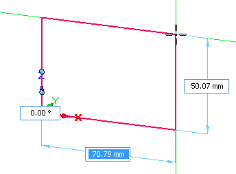
Position the cursor so that the Width value is near 70 mm and the Height is near 50, and then click to define the second point of the rectangle.
Press Esc to end the Rectangle by 2 Points command.
In the 3D model, the Relationship Colors command displays the color for an element based on the relationship status of the element. For example, an element that is fully constrained displays in a different color than an element that is not fully constrained. This allows you to determine if your profiles and sketches need more relationships applied.
-
The Relationship Colors command is selected on by default. If the command has been turned off, choose Inspect tab→Evaluate group→Relationship Colors command
 .
.
On the Home tab→Dimension group, choose the Smart Dimension command
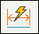
.Position the cursor over the horizontal line on the rectangle. When the line highlights, click to select it.
Move the cursor above the profile, and then click to define the dimension location.
In the Dimension Value edit box, type 70, then press the Enter key.
When typing values in a command bar box, you do not have to enter the unit type, such as mm or degrees.
Notice that the display value and the profile width update. The dimension you placed is a driving dimension. Driving dimensions control (or drive) the elements on which they are placed. Driving dimensions are red. Driven dimensions are blue.
If the Auto-Scale Sketch dialog box is displayed, check the Do not show this message again for the current session option and then click OK.
The Smart Dimension command is still active.
Position the cursor over the vertical line on the rectangle. When the line highlights, click to select it.
Move the cursor to the left, then click to position the dimension.
In the Dimension Value edit box, type 50, then press the Enter key.
On the Home tab→Close group, choose the Close Sketch command  .
.
You can also close the sketch using the Close Sketch icon in the top-left corner of the graphics window.
The Close Sketch command closes the profile view and returns to the 3D part view.
On the Extrude command bar, click the Symmetric Extent option, type 20 in the Distance box for the extent of the base feature, then press the Enter key.
On the Extrude command bar, click Finish.
Click Cancel to end the Extrude command.
Notice that when you clicked the Finish button, the profile elements, including the dimensions and relationships, are automatically hidden for you.
You completed the base feature.